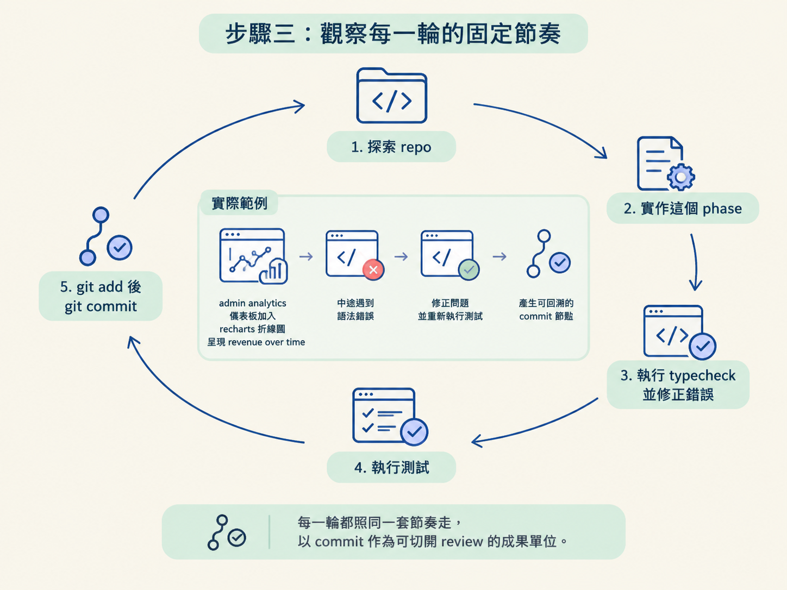
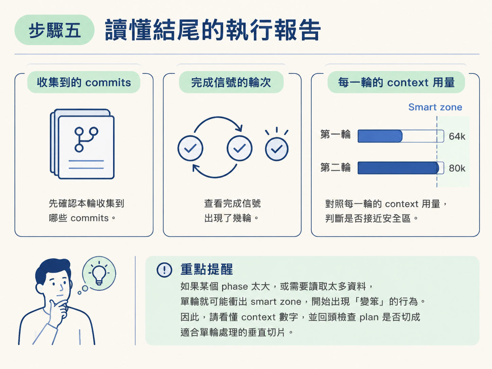

這一節會把整份多階段計畫交給 main.ts 執行，實際跑完一次 AFK 迴圈。你會看到 agent 如何跳過已完成的 phase，逐階段執行 typecheck、test 與 commit，也會學會從日誌判讀每一輪用了多少 context window。
做完之後，你應該會得到三樣東西：一份已完成的計畫、每個 phase 對應的 commit，以及一段能看懂的執行紀錄。
開始前，請確認以下項目都已準備好：
.env 裡已放好 API key。如果沙箱還沒建立，請執行：
pnpm sandcastle docker build image另外，務必確認接下來是在沙箱裡執行，而不是在主機上使用略過權限的模式。這是放手讓 agent 自動工作的前提，不能省略。
在終端機輸入下面這行。兩個位置引數依序是 PRD 與 plan：
npx tsx sandcastle/main.ts prd/admin-analytics.md plans/admin-analytics-plan.md執行後，agent 會立刻啟動。你可以按住 Control 再點擊日誌連結，把執行紀錄開起來查看。
一開始預期會看到 agent 讀取 PRD 與 plan。這兩份檔案就像行程表：PRD 說明要完成什麼，plan 則把工作切成 agent 可以逐步處理的 phase。
先看日誌開頭。這次 agent 會發現 phase one 已經完成，因為我們在互動式練習中已經做過這一階段。讀完 plan 後，它判斷不需要重做，於是直接前往 phase two。
再跑一次，agent 也不會把做過的事重做一遍。
每一輪開始時，agent 都會先探索 repo，再對照 plan，確認目前進度。找到第一個尚未完成的 phase 後，它才會從那裡接手。如果 plan 寫得夠清楚，agent 就能穩定續跑，不必每一輪都從頭來一遍。
日誌也會標示目前是哪一輪，例如 iteration 1 of 3。這讓你知道目前進度，以及最多還允許跑幾輪。
看懂一輪的內部結構後，你就能預測 agent 接下來會做什麼。每一輪大致都會依照同一套節奏進行：
git add 加入這個 phase 的變更，再用 git commit 建立提交。以這次的計畫為例，第一輪處理的是 phase two：在 admin analytics 儀表板加入 recharts 折線圖，呈現 revenue over time。
日誌中會看到 agent 中途遇到語法錯誤，接著修正問題、重新執行測試，最後建立一個 commit。commit 是可以回溯的切點：之後 review 或追查變更，就從這裡切開來看。

第一輪結束時，agent 還沒有輸出完成信號。因此，迴圈判斷仍有工作尚未完成，接著進入 iteration 2 of 3。
每一輪開始時，沙箱都會重新設定一次，這是正常行為。第二輪中，agent 再次辨識出 phase one 與 phase two 都已完成，於是繼續處理 phase three：加入 per-course breakdown 表格，並提供依講師篩選的功能。
這一輪仍然依序完成探索、實作、測試與建立 commit。最後，agent 輸出 no more tasks。看到這句話後，迴圈就會停止。
這次只跑了兩輪就收到完成信號，比 maxIterations 設定的 3 輪更早停止。這正是 completion signal 的作用：工作真的做完了，就不必把剩餘的額度全部跑完。
日誌最後會整理整趟執行結果。請特別查看以下三個數字或項目：
這些 context 數字會提醒你：就算用了迴圈，單一輪能處理的內容還是有限。如果某個 phase 太大，或需要讀取的資料太多，該輪就可能衝出 smart zone，開始出現「變笨」的行為。

因此，plan 是否切成適合單輪處理的垂直切片，會直接影響自動化迴圈的品質。
執行完成後，回到 dev UI 查看成果。這次應該會看到 revenue over time 折線圖，以及位於底部的 per-course breakdown 表格。表格可以依 Marcus Johnson 或 Sarah Chen 這類講師進行篩選。
驗收時也要保留一個實務上的判斷：圖表的移動方式看起來有點怪，但講師沒有立刻修正，而是把問題留到 QA 再處理。
「working code」還不到「完美成品」。AFK 迴圈的任務是把功能做出來；QA 與 review 還是得由你把關。
完成這些步驟後，你就得到一個可驗證的結果：整份計畫從 phase one 之後一路做到結束，每個階段都有對應的 commit，而且整個過程不需要你一直坐在鍵盤前。
至於為什麼規劃做得好，放手讓迴圈執行時才會更順利，會在下一個決定中處理。
啟動時，把 PRD 與 plan 當成位置引數傳給main.ts。每輪 agent 會先辨識已完成的工作，只處理下一個尚未完成的 phase，接著依序執行 explore → implement → typecheck/test → commit。若沒有完成信號，就進入下一輪，直到輸出no more tasks。閱讀日誌時，請查看收集到的 commits、完成信號出現的輪次，以及每輪的 context window 用量。執行結束後，回到畫面驗收；working code 仍然需要 QA。